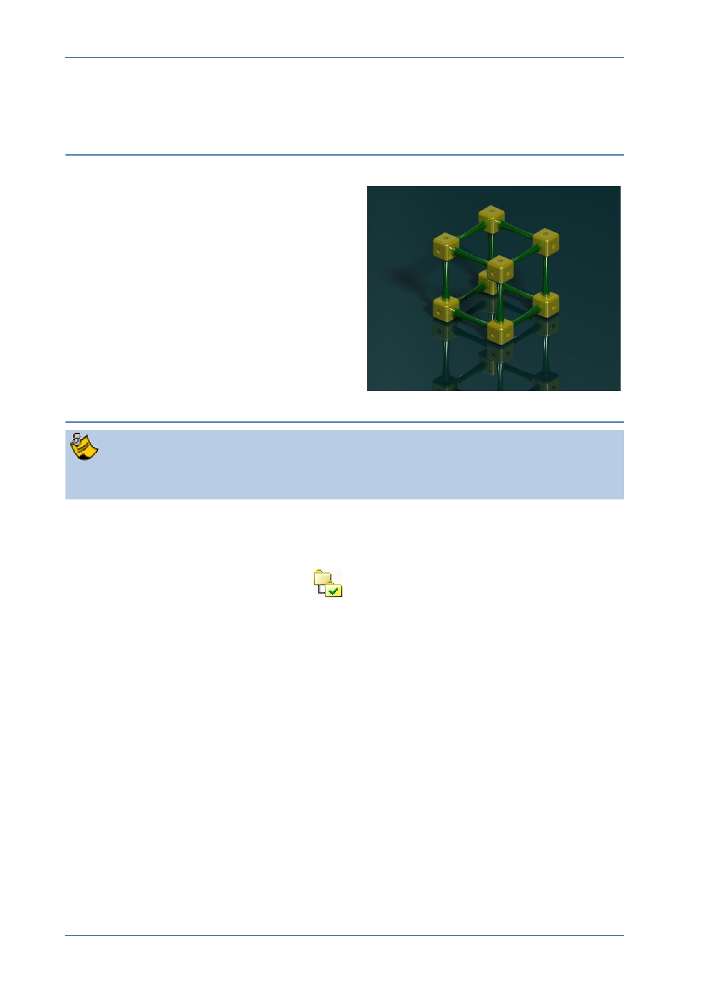

PTC Academic Program
Module 4
Procedure - Rendering
Scenario
This section will teach you how to create a
photo-realistic image of your model. This
process is often called rendering.
You will start by applying a “Scene” to your
model which includes details of the room,
lighting and any special effects.
Creo Parametric uses these settings and
calculates the light paths to create the
finished image.
Step 1: Open the Render tab and apply a scene
If you just completed Module 3 and have not exited from Creo Parametric, you
should skip tasks 1 to 4 below.
1. Start Creo Parametric.
2. Setting the working directory:
Click Select Working Directory
from the Data group of the Home tab.
In the Select Working Directory dialog box, browse into the folder where you
saved the other Primer models.
After you have browsed into the working directory folder, click OK to set that
folder as your working directory.
3. Open your assembly:
Click Open from the Quick Access toolbar or Home tab.
From the File Open dialog box, double-click your assembly to open it.
© 2012 PTC
Creo Parametric 2.0 Primer
Page 81